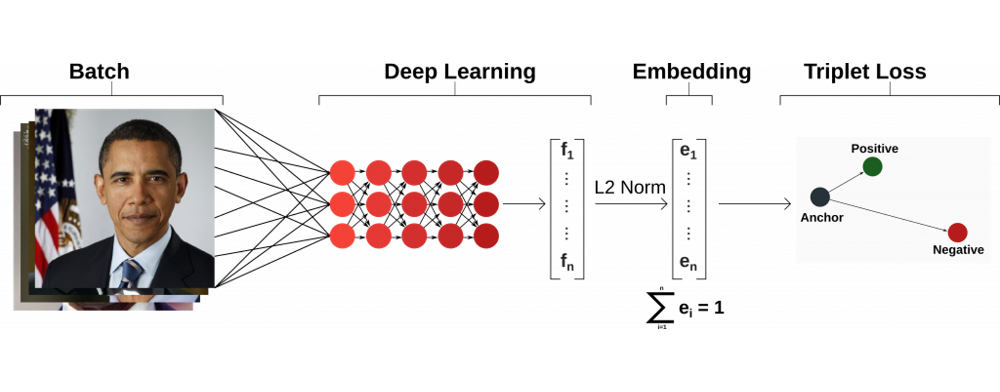

Results and Discussion
Hypothesis is rejected: Face Transformer is less likely to holistically recognize and identify faces than FaceNet
While both networks are processing faces holistically, FaceNet seems to be slightly more accurate at identifying faces regardless of the manipulations. It might be helpful to understand how each of the networks are designed to understand the initial hypothesis, and try to make sense of the results.
In looking at how Face Tranformer operates, by processing an image as a linear projection of different patches and encoding them based on similarities between them, it seemed plausible that it would be a good model for looking at faces holistically (see a schematic of the model architecture below).
In contrast, FaceNet has different convolutional layers that process images in patches, which would make it possible to identify two faces of the same person in different orientations, independent of the whole (see model architecture below).
Questions for Further Discussion
In human vision, configurational information is important in face perception. This configurational information is only readily derived from an upright face, it does not interfere in the perception of inverted faces. Interestingly, it is easier to identify the constituent parts of facial features as a whole. Face inversion seems to disrupt holistic face processing, pointing out that spatial and orientation processing is used for face recognition.
The question still lingering is why machines emulate the brain for holistic face processing. Both FaceNet and Face Transformer network architectures are set up to recognize faces as a whole, but it might be useful for these algorithms to be able to recognize a face regardless of its orientation or feature obfuscation.
More experiments would be needed to compare different face manipulations and reach a more precise calibration of which of the two models has a higher holistic face processing index.
Sources
- Krizhevsky, A., Sutskever, I. and Hinton, G.E., 2012. Imagenet classification with deep convolutional neural networks. Advances in neural information processing systems, 25.
- Schroff, F., Kalenichenko, D. and Philbin, J., 2015. Facenet: A unified embedding for face recognition and clustering. In Proceedings of the IEEE conference on computer vision and pattern recognition (pp. 815-823).
- Watson, T.L., 2013. Implications of holistic face processing in autism and schizophrenia. Frontiers in psychology, 4, p.414.
- Young, A.W., Hellawell, D. and Hay, D.C., 2013. Configurational information in face perception. Perception, 42(11), pp.1166-1178.
- Zhao, M., Bülthoff, H.H. and Bülthoff, I., 2016. A shape-based account for holistic face processing. Journal of Experimental Psychology: Learning, Memory, and Cognition, 42(4), p.584.
- Zhong, Y. and Deng, W., 2021. Face transformer for recognition. arXiv preprint arXiv:2103.14803.